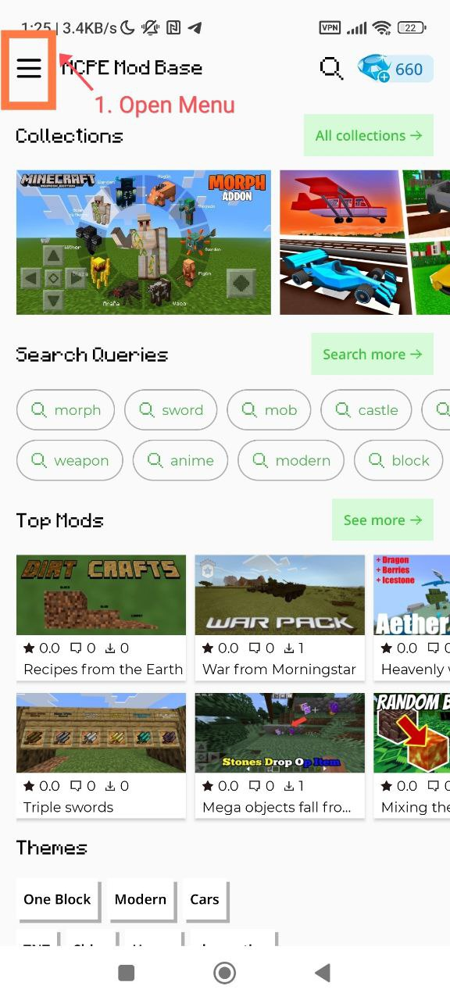
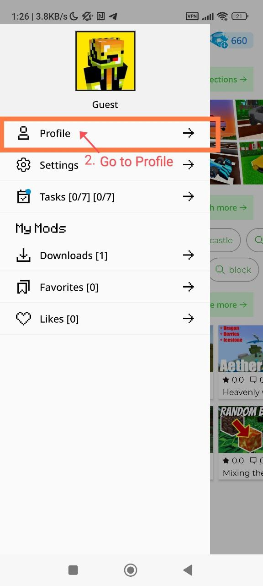
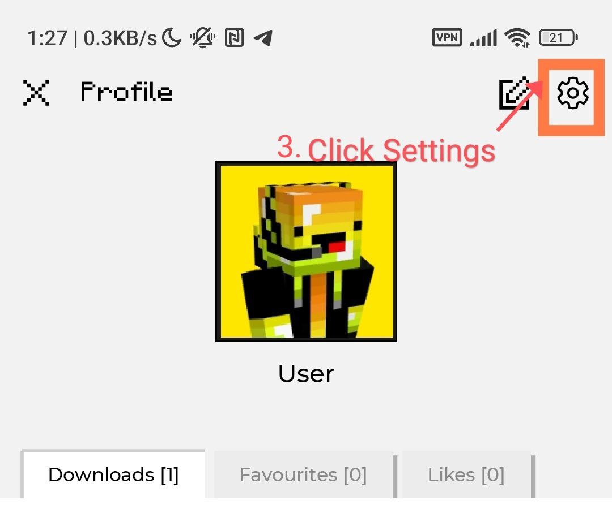
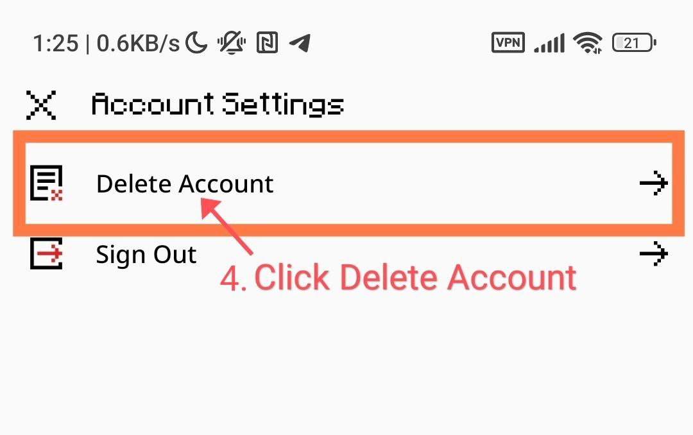
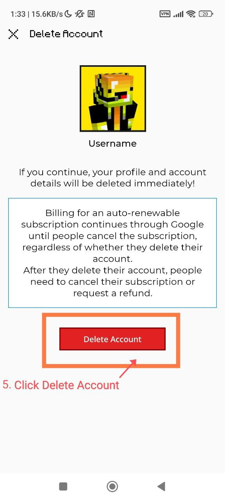
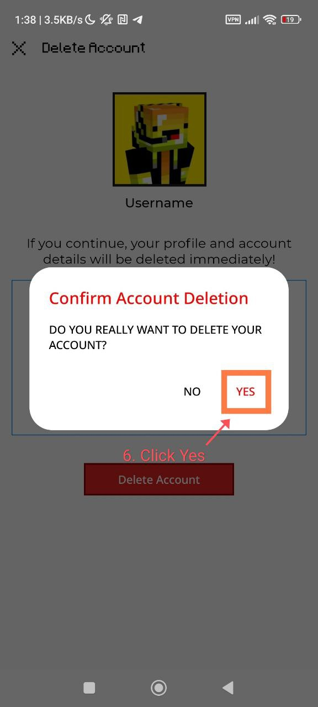

This guide will help you delete your account in Mods Explorer for Minecraft PE. Deleting your account will permanently remove all associated user data, and this data will not be stored.
Developer: Nappoval
Click on the menu icon in the top-left corner of the screen.
Select "Profile" from the menu options.
Tap on the settings icon in the top-right corner.
In the account settings menu, choose "Delete Account".
Click on the "Delete Account" button.
Confirm your decision by selecting "Yes".
Note: Once you delete your account, all associated data will be permanently removed and will not be stored.